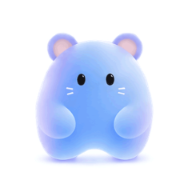
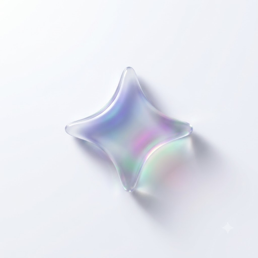

1. 발급하러 가기를 눌러 Google AI Studio에 로그인하세요. 2. 좌측 메뉴에서 ‘Get API key’를 선택하세요. 3. ‘Create API key’ 버튼을 눌러 새 키를 생성하세요. 4. 생성된 키를 복사해 입력창에 붙여넣으세요.
Gemini와의 연결이 해제되어 챗봇을 이용할 수 없습니다. 네트워크 상태를 확인하거나 설정에서 제미나이 키를 변경해 주세요.